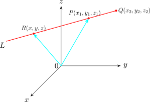

4.6 Lines in Three Dimensional Space
Let \(P(x_1,y_1,z_1)\) and \(Q(x_2,y_2,z_2)\) be two points on a straight line \(L\) as shown below.

The vector \(\overrightarrow {PQ}\) is parallel to the line \(L\). Let \(R(x,y,z)\) be an arbitrary point on the line \(L\). Then the vector \(\overrightarrow {RP}\) is parallel to vector \(\overrightarrow {PQ}\). Hence \[ \overrightarrow {PR} = t \overrightarrow {PQ}\hspace {0.5cm} \cdots \cdots \cdots \hspace {0.5cm} (I)\] for some real number \(t\). From the diagram above \(\overrightarrow {OR} = \overrightarrow {OP} + \overrightarrow {PR}\) thus, \[\overrightarrow {OR} = \overrightarrow {OP} + t \overrightarrow {PQ}\hspace {0.5cm} \cdots \cdots \cdots \hspace {0.5cm} (II)\] \((II)\) is the vector equation of a straight line which passes through the points \(P\) and \(Q\).
Usually, the vector equations of a straight line is written as \[\underline {r} = \underline {P} + t \underline {P}a\hspace {0.5cm} \cdots \cdots \cdots \hspace {0.5cm} (III)\]
Now, \(\overrightarrow {PQ} = (x_2 -x_1)\textbf {i} + (y_2 -y_1)\textbf {j} + (z_2 -z_1)\textbf {k}\), \(\hspace {0.5cm} \overrightarrow {OR} = x \hat {i} + y\hat {j} + z\hat {k}\hspace {0.5cm}\) and \(\hspace {0.5cm}\overrightarrow {OP} = x_1\hat {i} + y_1\hat {j} + z_1\hat {k}\). Thus, the vector equation of a straight line can be written as \[x\hat {i} + y\hat {j} + z \hat {k} = x_1 \hat {i} + y_1\hat {j} + z_1\hat {k} + t[(x_2 -x_1)\hat {i} + (y_2 -y_1)\hat {j} + (z_2 -z_1)\hat {k}] \hspace {0.5cm} \cdots \cdots \cdots \hspace {0.5cm} (IV)\]
from \((IV)\) we have \[\overline {\underline {V}} \begin {cases} x & = x_1 + t(x_2 - x_1)\\ y & = y_1 + t(y_2 - y_1)\\ z & = z_1 + t(z_2 -z_1)\\ \end {cases} \] These are the parametric equations of the straight line which passes through \(P\) and \(Q\). From the parametric equations making \(t\) the subject of the formula, we have \[t = \frac {x - x_1}{x_2 - x_1} = \frac {y - y_1}{y_2 - y_1} = \frac {z - z_1}{z_2 - z_1}\] which is symmetric equation of straight line which passes through the points \(P\) and \(Q\).
The symmetric equation a straight line is usually written as \[\frac {x - x_1}{a} = \frac {y - y_1}{b} = \frac {z - z_1}{c}\] where \(a = x_2 -x_1\hspace {0.5cm}, \hspace {0.5cm} b = y_2 - y_1 \hspace {0.5cm} \) and \(\hspace {0.5cm} c = z_2 - z_1\)
Note. the vector \(a\hat {i} + b\hat {j} + c\hat {k}\) is parallel to the straight line passing through the points \(P\) and \(Q\).
Find the vector equation, parametric equations and symmetric equations of a straight line which passes through the point \(P(2,3,-1)\) and \(Q(3,0,4)\).
Solution.
The vector equation of a straight line is given by \begin {align*} \overrightarrow {OR} & = \overrightarrow {OP} + t \overrightarrow {PQ}\\ \underline {r} & = \underline {P} + t \overline {PQ} \end {align*}
\(\underline {r} = x\hat {i} + y\hat {j} + z\hat {k} \hspace {0.5cm}, \hspace {0.5cm} \underline {P} = 2\hat {i} + 3\hat {j} - \hat {k}\hspace {0.5cm}\) and \(\hspace {0.5cm} \overrightarrow {PQ} = (3 - 2)\hat {i} + (0-3)\hat {j} + (4-(-1))\hat {k} = \hat {i} - 3\hat {j} + 5\hat {k}\)
\(\therefore \) the vector equation of a straight line is \(x\hat {i} + y\hat {j} + z\hat {k} = 2\hat {i} + 3\hat {j} - \hat {k} + t (\hat {i} - 3\hat {j} + 5\hat {k})\) or \(\underline {r}= 2\hat {i} + 3\hat {j} - \hat {k} + t (\hat {i} - 3\hat {j} + 5\hat {k})\)
The parametric equations are \(\displaystyle { \begin {cases} x & = 2 + t\\ y & = 3 - 3t\\ z & = -1 + 5t\\ \end {cases}}\)
The symmetric equation is \(\displaystyle {\frac {x-2}{1} = \frac {y - 3}{-3} = \frac {z + 1}{5}}\)
Note.
The vector \(\hat {\textbf {i}} - 3 \hat {\textbf {j}} + 5\hat {\textbf {k}}\) is parallel to the straight line.
Now, if \(L\) is a straight line which passes through the point \((x,y,z)\) and is parallel to the vector \(\underline {V} = a \hat {\textbf {i}} + b\hat {\textbf {j}} + c\hat {\textbf {k}},\) then the symmetric equation of the line is as follows:
- 1.
- \(\displaystyle {\frac {x- x_1}{a} = \frac {y - y_1}{b} = \frac {z - z_1}{c}}\), if \(a, b, c\) are all non zero.
- 2.
- \(x =x_1\), \(\dfrac {y - y_1}{b} = \dfrac {z - z_1}{c}\) if \(a = 0\) and \(b\) and \(c\) are both nonzero then the line is parallel to the \(yz\) plane \(y = y_1,\) \(\dfrac {x - x_1}{a} = \dfrac {z - z_1}{c}\). If either \(b\) or \(c\) is equal to zero but \(a\neq 0\) similar results hold.
- 3.
- \(x =x_1, y = y_1 , z = z_1 + ct\), if \(a\) and \(b\) are zero and \(c\neq 0\). The line is parallel to the
\(z-\) axis. If \(a\) and \(c\) are zero or \(b\) and \(c\) are zero, the similar results hold \[x = x_1\hspace {0.3cm} , \hspace {0.3cm} y = y_1 +bt\hspace {0.3cm} ,\hspace {0.3cm} z =z_1\] \[x = x_1 + at\hspace {0.3cm} , \hspace {0.3cm} y = y_1\hspace {0.3cm} , \hspace {0.3cm} z = z_1\]
Questions on this section
Stuck on something here? Ask below and it stays attached to this topic.